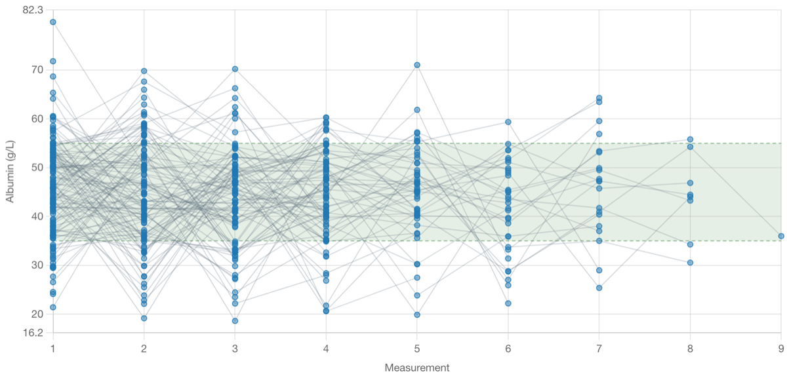
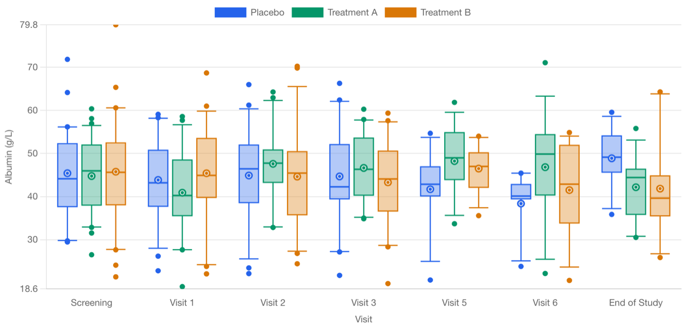
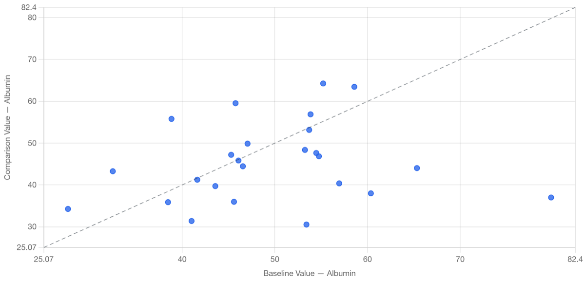
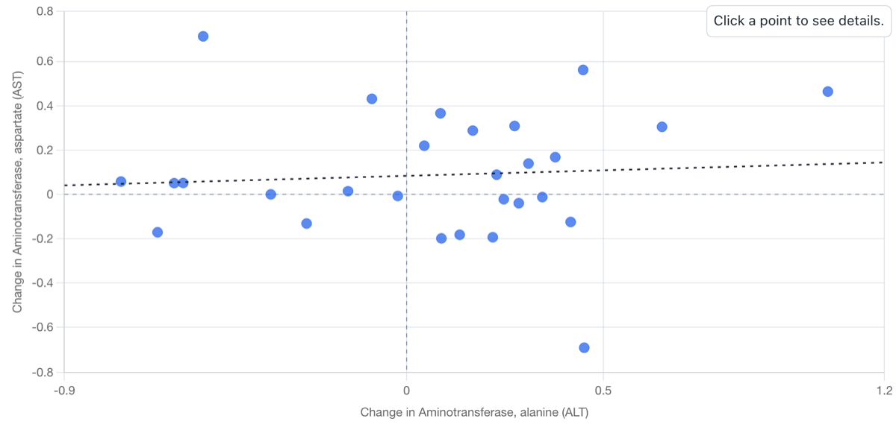
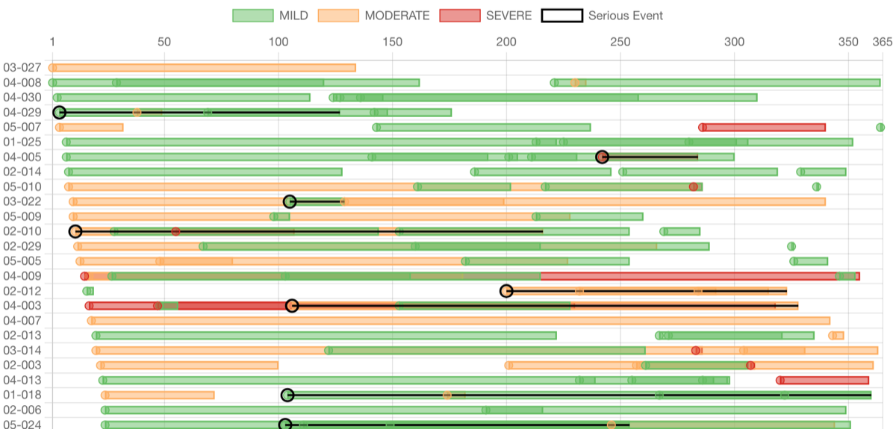
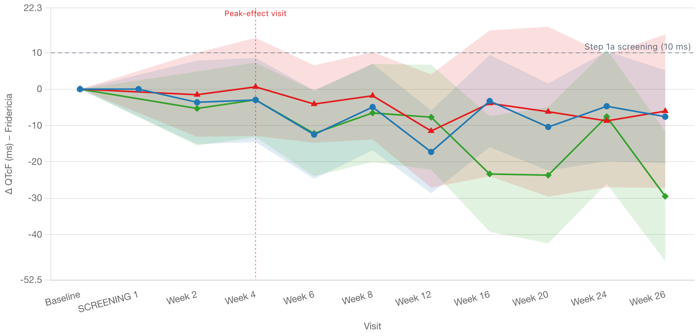

safety.viz
safety.viz is a charting library for monitoring clinical trial safety. It's an agent-assisted update of the safetyGraphics framework.
Available renderers 9 of 11 migrated

Safety Histogram
Distribution of a chosen lab or vital-sign measure with filters, grouping, normal-range overlay, and a linked participant listing.

Safety Outlier Explorer
Participant-level results over time: one line per participant for the selected measure against a population normal-range band, with filters, x-axis and y-limit controls, color-by grouping, and click-to-select participant detail.

Safety Results Over Time
Population-level distribution of a measure at each study visit as box-and-whisker marks, with grouping, an outlier overlay, and linear/log y-axis controls.

Safety Shift Plot
Baseline versus comparison-visit values for a measure on a scatter with an identity line, measure and visit controls, filters, and a brush selection that opens a linked participant listing.

Safety Delta-Delta
Paired change-from-baseline comparison of two measures on one scatter — quadrant reference lines, an optional regression line, measure and visit pickers, and a linked per-measure detail table with sparklines.

Hepatic Safety Explorer
eDISH scatter of peak ALT vs peak total bilirubin (×ULN) with Hy's-Law quadrant cut-lines, a quadrant summary table, eDISH/mDISH display modes, R-Ratio and timing controls, and click-to-inspect participant visit paths — plus a baseline-referenced composite plot (Tesfaldet et al., Drug Safety 2024) for subjects with abnormal baseline liver tests, with pretreatment/on-treatment eDISH panels, a four-panel ×Baseline shift plot, and a migration table.

Adverse Event Explorer
Hierarchical adverse-event incidence table — System Organ Class rows expandable to Preferred Terms — with per-arm rates, an inline rate dot plot, group-difference confidence intervals, prevalence/search/characteristic filters, and drill-down to the underlying records.

Adverse Event Timelines
Participant-level adverse-event timelines by severity and onset relative to study start, with serious-event marks and click-through participant detail.

QT Safety Explorer
ECG QT/QTc safety review: per-arm central-tendency change over time (Δ / placebo-corrected ΔΔ) with a 90% CI band and the ICH-E14 metric, the flagship outlier scatter of change vs baseline with the 450/480/500 ms absolute diagonals and 30/60 ms change lines, and a by-arm categorical exceedance table — QTcF / QTcB corrections plus heart rate.
In the queue: Paneled Outlier Explorer · Web Codebook — each already has a reviewed requirement matrix in safety.agent.